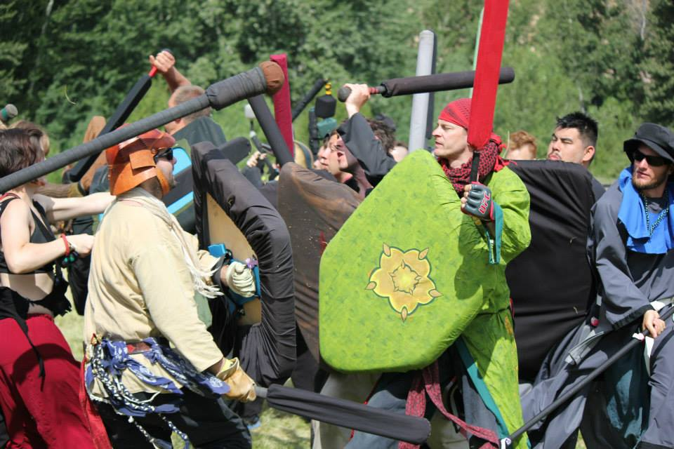
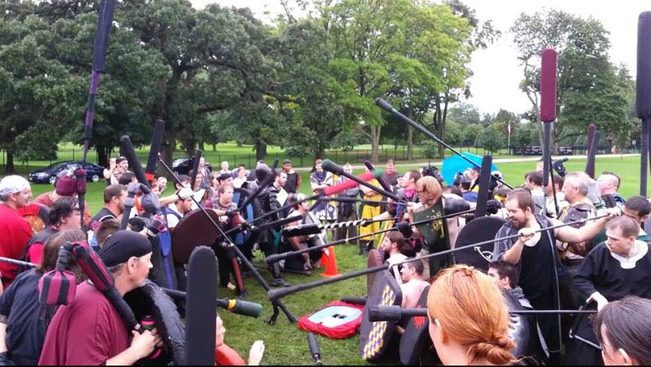
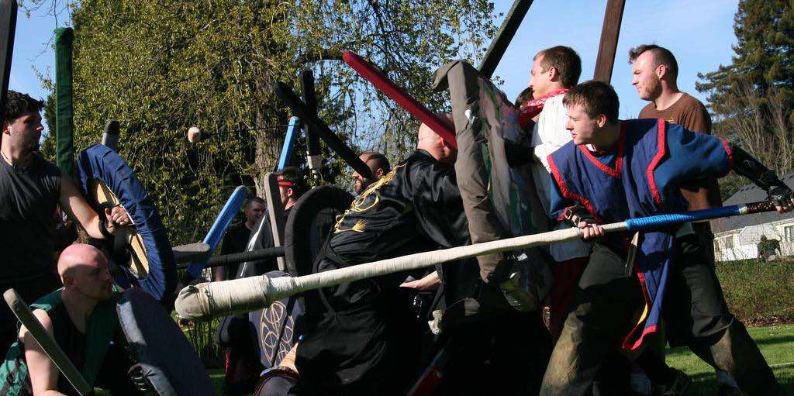
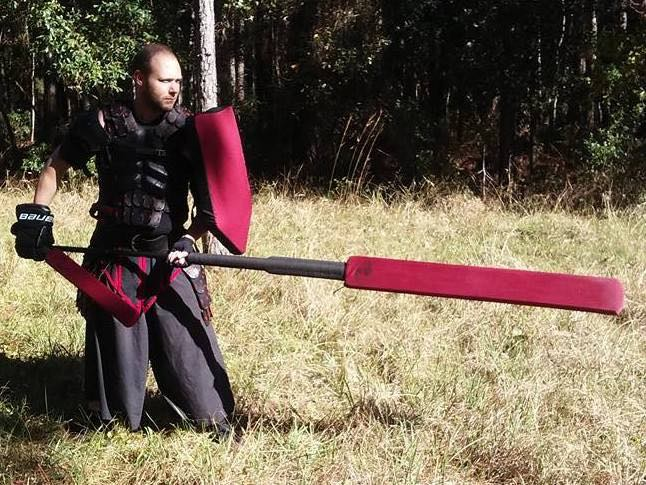
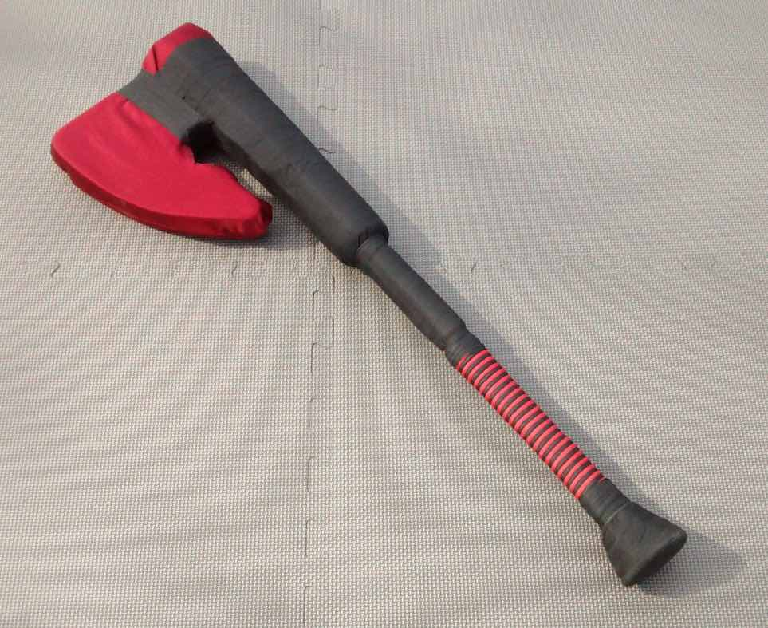
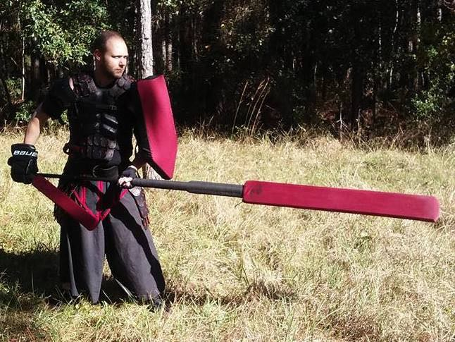
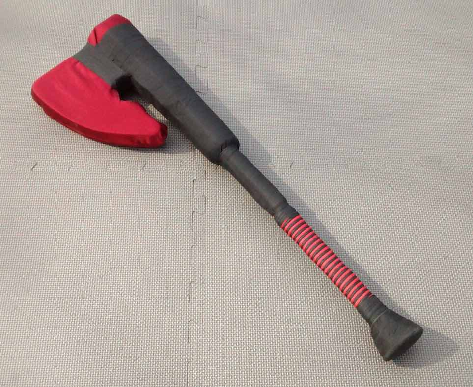

Belegarth Training Guide
Or, How to "Git Gud" At Stick Tag
The Basics
Belegarth is a medieval combat society in which combatants use “boffer” swords to simulate combat. It is often likened to Live Action Role Play, or LARP, and is indeed considered to be a LARP by some, but it is primarily a sport with role-play, or RP, as a secondary focus. This website focuses on the combat side of Belegarth. For the rules please refer to the Book of War.
  Where to Fight
To become a skilled warrior, you must learn and practice. Events are a great way to meet top fighters from around the country who are usually happy to impart their knowledge. Large events typically have classes, as well as plenty of sparring opportunities for one on one teaching. Unfortunately, there is not an up-to-date calendar of events, but your local practice should be able to give you information about upcoming events in your area.
Practices serve as both a fun way to exercise and compete with your friends on the weekend, as well as the place to hone your skills. A typical practice consists of a few hours of team fights, with some one on one fights and water breaks mixed in. Please refer to the Realm Locator to find your local practice, and be sure to check your practice’s Facebook page for the most up-to-date information.
Equipment
The three most important types of equipment to own in Belegarth are weapons, garb, and safety gear. Weapons can be made or bought. Please see the How To Build page for tutorials on construction. There are many vendors to choose from, but Gorg The Blacksmith and Forged Foam are good places for a new fighter to start shopping. Garb can also be made or bought. If you are on a budget, it is easy and cheap to make a simple tabard and wear sweatpants or scrubs. The Guild Library has some sewing tutorials. Linen Garb has high quality garb if you are willing to spend some money. Safety gear is not required, but strongly recommended. Lacrosse or MMA gloves, knee pads, and good shoes are the most basic protection that everyone should have.
 


